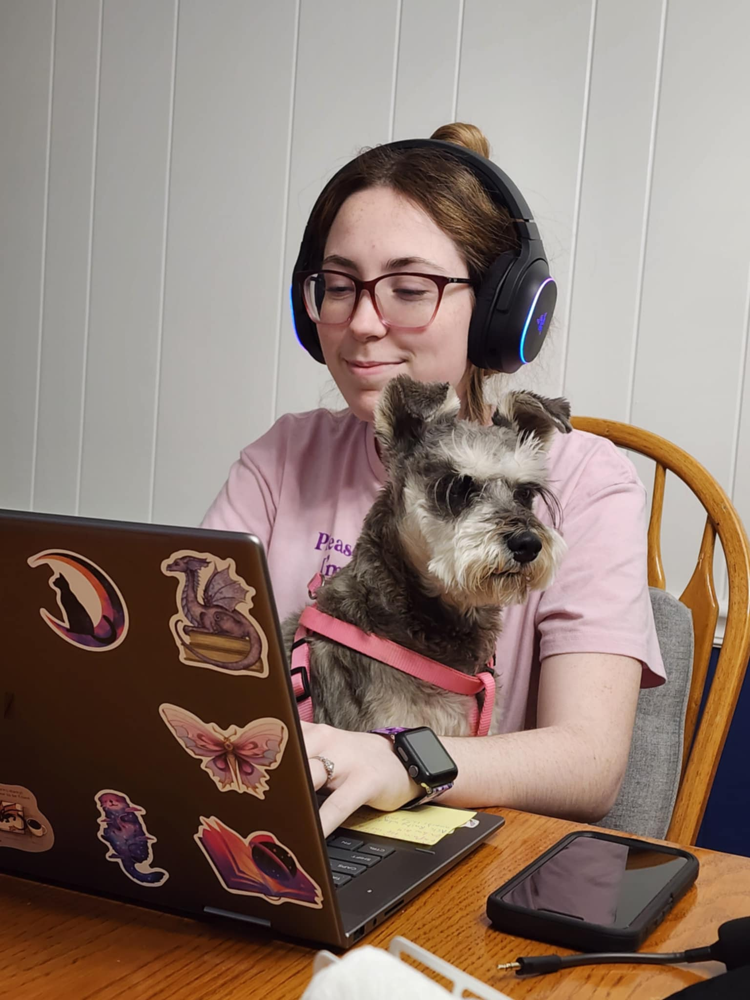
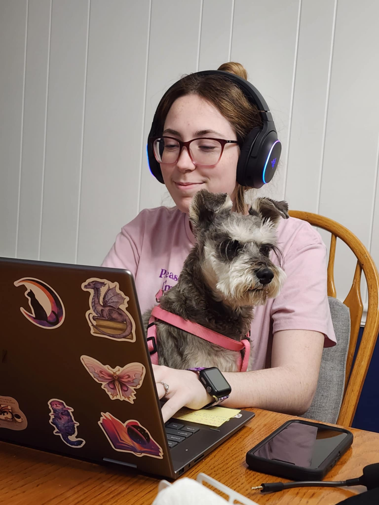

.jpg) 

.jpg)
.jpg)
.jpg)
.jpg)
Welcome to My Gaming Journey!
Hi there gamer! My name is Rayla Johnson I am a passionate gamer who enjoys exploring new worlds, solving challenging puzzles, and going on fun co-op adventures with friends. No matter whether I am engaging in the limitless exploration of open world games, fighting in RPG quests, or cracking elaborate mysteries, I always enjoy the adventure and the collaborations actively.
My favorite genres are action-adventure, RPGs, and cooperative games, especially It Takes Two, Lethal Company, and Minecraft. Every gaming experience is simply amazing because of the collaboration required from my friend to help me complete challenges, use proper tactics, and engage with wonderful stories.
Outside of gaming, I'm a full-time student at Northern Kentucky University, majoring in Cybersecurity with a minor in Applied Artificial Intelligence. Cybersecurity fascinates me because it blends problem-solving, critical thinking, and technology, much like gaming. This allows me to enjoy tackling complex challenges in both virtual and real-world environments.
Along with that I have a dog named Bella, a boyfriend named skyler, his cats name is Rainbow and his dogs name is Oliver. I love spending time with my family. My father and I went to a NASCAR Race. We share similar interest in lots of things especially games and computers. My mom and I love to go shopping together and do arts projects. We share common artsy interest and she takes the best pictures with her camera! My boyfriend, skyler, he is studying to be an areopspace enginering and is considering a minor in physics. He has gotten me into more games that I typically wouldn't have thought I'd like to play. We have been together 3 years and still going strong.
This website is a space where I can share my passion for gaming, connect with fellow players, and offer tips and insights into some of my favorite games. I'm always up for new adventures, both in games and in life, so feel free to join me on this journey!
You can contact me by my email: raylajohnson1@gmail.com